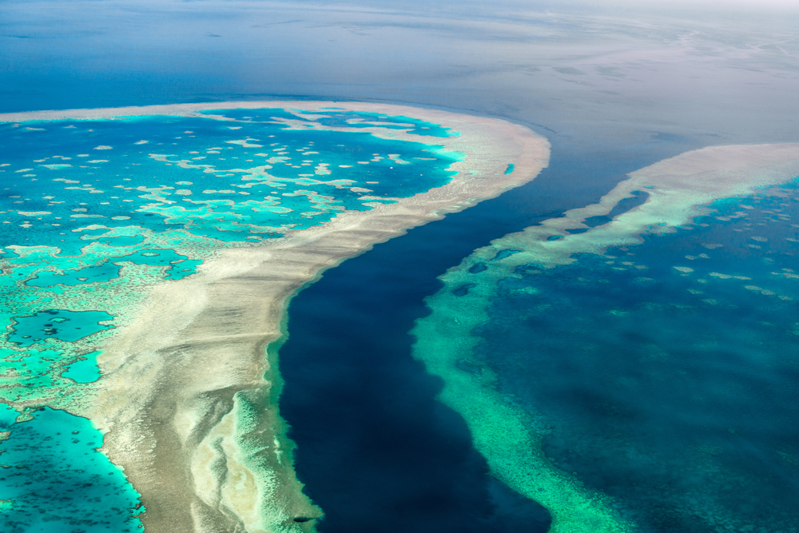

A biodiversidade ou diversidade biológica, é o conjunto de todos os seres vivos existentes, o que inclui todas as plantas, animais e microorganismos em determinada região nos seus mais diferentes habitats.Esse conceito relaciona-se com o número de espécies de um local mas também com a variação entre organismos da mesma espécie e sua abundância. Com o aumento das cidades e da atividade humana, muitos ambientes são destruídos e as mudanças climáticas tornam-se uma realidade cada vez mais inevitável. Com isso, temos uma redução da biodiversidade, que desencadeia prejuízo para o meio ambiente e até mesmo para a economia. Segundo a World Wide Fund for Nature (WWF), “entre os especialistas, o Brasil é considerado o país da 'megadiversidade': aproximadamente 20% das espécies conhecidas no mundo estão aqui”.
Grande Barreira de Corais, Austrália.
O ar que respiramos, os alimentos que ingerimos, a energia que usamos e os materiais de que precisamos para todos os fins, são todos frutos da interação desta biodiversidade. Sem as plantas, por exemplo, não teríamos oxigênio. Sem as abelhas e outros insetos, não teríamos colheitas, não teríamos comida. Sem os fungos, não teríamos a decomposição e reciclagem das matérias.
Extinção é o desaparecimento de todos os indivíduos de uma determinada espécie. As evidências sugerem que a rápida velocidade de desaparecimento da diversidade da vida na Terra seria o indício do início de uma extinção em massa, causada por atividades como o desmatamento, a caça e pesca em larga escala e a poluição da atmosfera e dos oceanos.
1. Rinoceronte-de-java;
2. Arara azul;
3. Ariranha;

4. Soldadinho do araripe;
5. Leopardo-de-amur;
6. Papagaio kakapo;
7. Orangotango de bornéu;

8. Tigre-de-sumatra;
9. Lobo-guará;
10. Elefante de sumatra;
11. Gorila-das-montanhas;
12. Lêmure de cauda anelada;

A perda de uma única espécie pode provocar efeitos em todo o ecossistema e cadeia alimentar, já que predadores maiores controlam a população de diversos animais e também influenciam nos ciclos vitais de plantas. Um dos impactos diretos na humanidade seria a queda na produção de alimentos pela falta de agentes polinizadores. É o caso das abelhas e insetos que estão desaparecendo por causa do uso de inseticidas, principalmente na Europa. Esses animais são responsáveis por cerca de 75% da polinização agrícola do mundo. A diminuição de espécies também traz doenças infecciosas, afetando diretamente nossa saúde. Isso porque eliminado o animal que é hospedeiro natural de patógenos como vírus e bactérias, eles buscam novos hospedeiros, contaminando os humanos.
Medidas de conservação da biodiversidade são fundamentais, como a criação de unidades de conservação em áreas sem influência humana e que buscam proteger a fauna e flora ameaçadas, como florestas e barreiras de corais marinhos; promover o reflorestamento de áreas anteriormente devastadas; combater a caça e o tráfico ilegal de espécie, principalmente das ameaçadas de extinção; e promover o monitoramento das populações de animais.